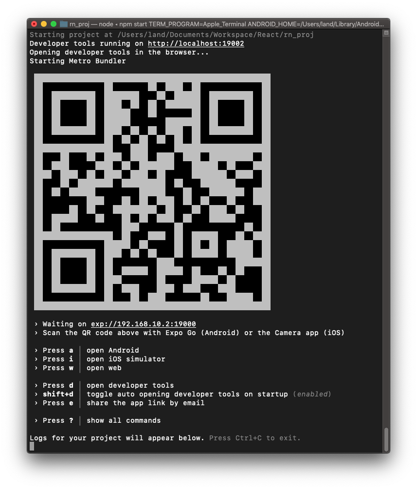
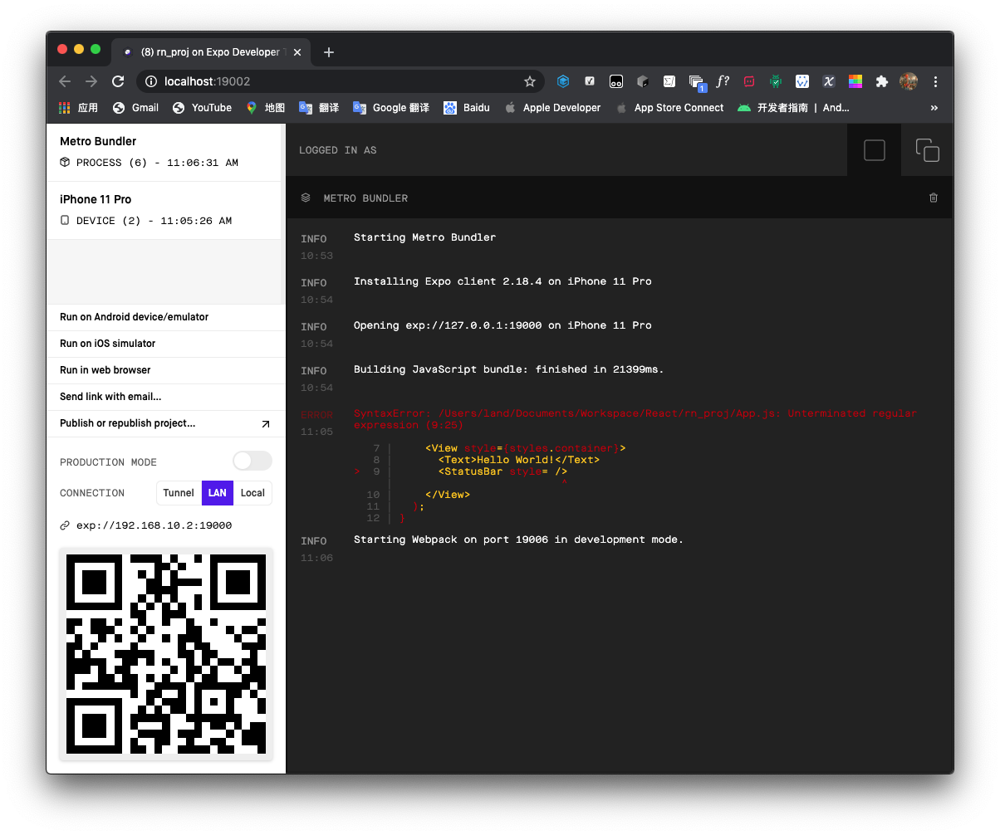
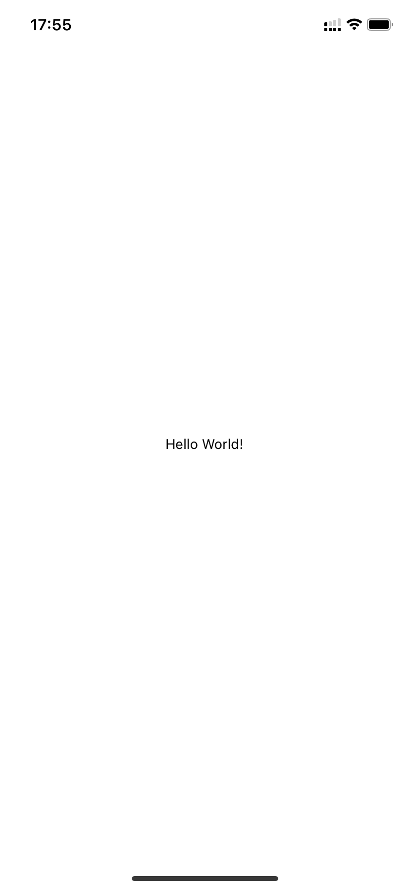
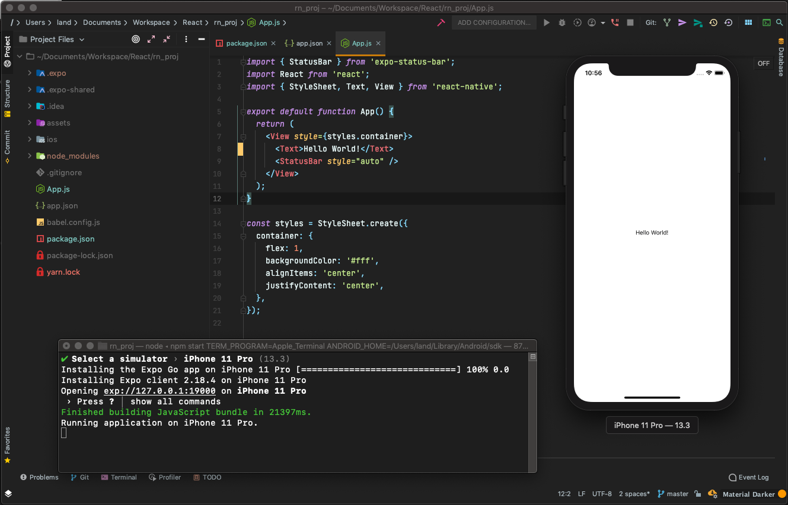
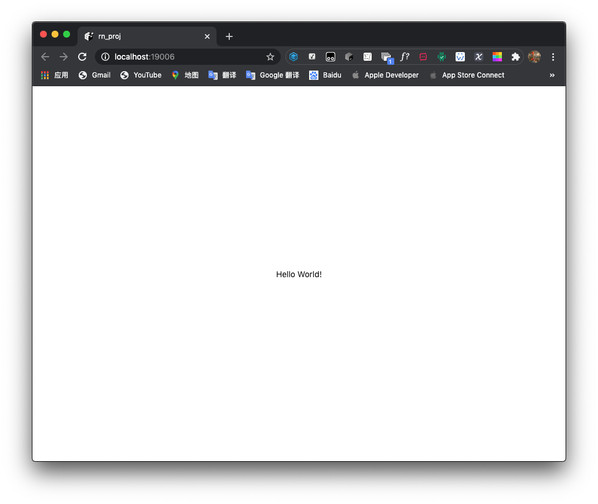

安装
由于开发需要，稍稍玩了玩 React Native 开发一个 App 的简要流程。
安装使用时，可以使用 Expo ，可以省去在 Xcode 或者 Android Studio 配置的过程。
运行以下命令安装 Expo
npm install -g expo-cli
注意这里在 npm 前不要加 sudo，请提前确保权限通顺
sudo chown -R $(whoami) ~/.npm
sudo chown -R $(whoami) /usr/local/lib/node_modules
安装好后，我试图运行 Expo，但是得到了 Expo 不支持当前的 Node 版本的错误，于是运行 nvm 来安装最新版本 Node（以下是未安装 nvm 的版本）：
sudo npm install -g n
sudo n latest
或者，使用 yarn
yarn global add expo-cli
开始
安装好后，生成第一个项目：
expo init rn_proj
进入目录并运行
cd rn_proj
expo start

然后同时会打开一个 Web 控制台

然后在待调试的设备上下载 Expo Go 后扫码即可开始调试
将 App.js 中 Text 标签对里的内容改为 Hello World! 后

运行在 iPhone XR 真机上：

模拟器运行
这里我弄了好久一直卡在安装 Expo Go 到模拟器中，看到网络流量情况才发现下载一直没有用代理，macOS 需要开启终端代理才可。
export https_proxy=http://127.0.0.1:7890 http_proxy=http://127.0.0.1:7890 all_proxy=socks5://127.0.0.1:7890
这里的端口需要设置为代理的端口，我使用的 Clash 可以自动生成终端代理命令。

运行于 Web

写代码时每当修改保存，只要当前还处于
expo start状态，真机或模拟器上的画面就会跟着改变
或者直接使用 React Native
npx react-native init rn_proj
或
yarn react-native init rn_proj
国内访问记得设置代理
npm config set proxy=http://127.0.0.1:xxxx